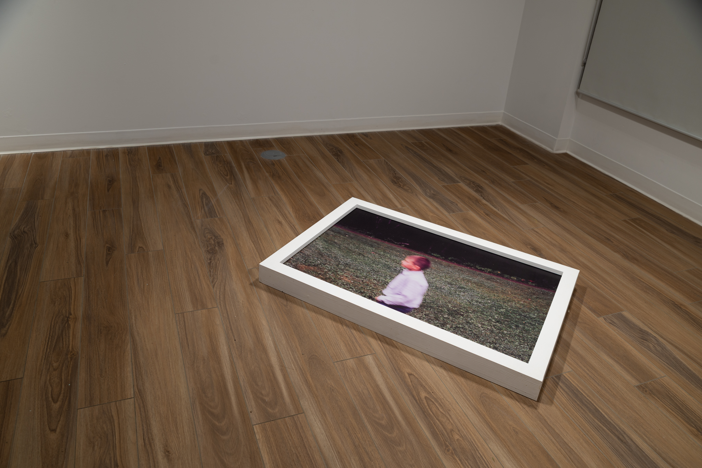
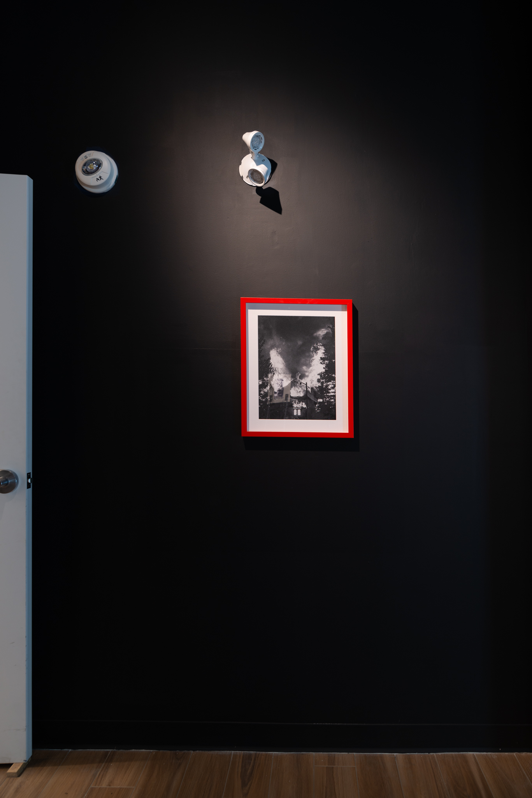

Constructed Image
aceartinc.
Winnipeg, Manitoba
January 9 – February 27, 2026
An exhibition by Skye Callow and Tobin Rowland.
Installation photography by Sarah Fuller.
Constructed Image is a collective glimpse into the practices of emerging visual artists Skye Callow and Tobin Rowland, and puts them in direct conversation with one another for the first time. Both working at the fringes of contemporary photography, each artist’s practice is driven by process and experimentation, and the investigation into formal aesthetics and the conceptual capabilities of images.
Through lens-based practices, sculpture, painting, and methods that fall between the lines of easy categorization, Callow and Rowland consider the differences between captured images, and constructed ones. They ask – what dictates beauty in contemporary visual culture, and what determines an image valuable or “real”?
Rooted by an ongoing, open-ended inquiry into what an image is, and what it could be, Constructed Image functions as a site of play, care, and experimentation for each artist, and disrupts and challenges accepted conventions of photography and visual representation.
Further Reading
Constructed Image — aceartinc. Exhibition Announcement
Experimental photographers challenge conventional beauty at aceartinc. (Classic 107)
Public Talk with Skye Callow and Tobin Rowland (aceartinc.)



